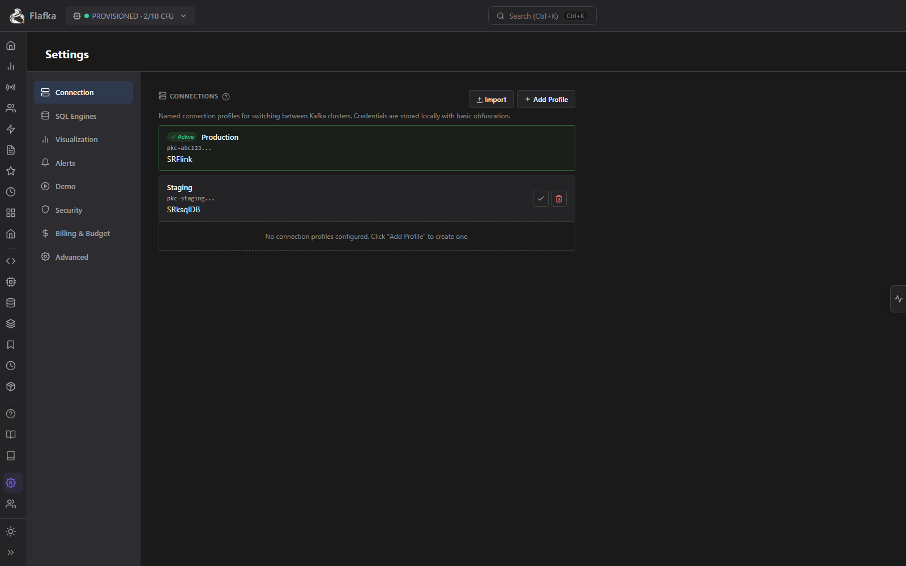
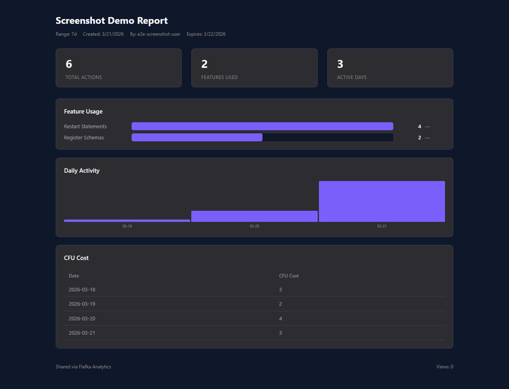

Screenshots
Product gallery
Real screenshots from live Confluent Cloud clusters. Dark mode, real data.





Real product demos from real Confluent Cloud clusters. No mockups, no slides — just the actual product.
A complete walkthrough of Flafka's key capabilities including topic management, schema registry, Flink SQL IDE, connector monitoring, and more.
The only Kafka management platform with built-in FinOps. No competitor offers Spend Dashboard, CFU Monitor, or Cost Trend Forecasting.
The only Kafka admin tool with a kubectl-style terminal built into the GUI. No context switching, no separate tooling, no copy-pasting topic names between windows.
Switch between multiple Confluent Cloud clusters instantly. Save, manage, and share connection configurations.
Full connector lifecycle: create, configure, pause, resume, and delete. Health monitoring with status indicators.
Generate time-limited shareable links for analytics reports and dashboard snapshots. Collaborate without sharing credentials.
Track service level objectives for lag, throughput, and availability. Error budget burn-down with sparkline trends. UNIQUE
Define custom SLOs with targets and thresholds. Set error budgets and notification preferences.
Secure login with local auth and OIDC support. Password reset, session management, and user creation.
Admin panel for user CRUD. Create users with temporary passwords, manage roles, and track activity.
CFU cost estimation before Flink SQL statement submission. Budget warnings and cost projections. UNIQUE
Inline cost information for Flink SQL jobs. See CFU consumption at a glance without leaving your workflow.
Export analytics data as JSON or CSV. Permission-enforced exports respect RBAC boundaries.
Real screenshots from live Confluent Cloud clusters. Dark mode, real data.


Deploy in under 5 minutes. Free tier available with no credit card.